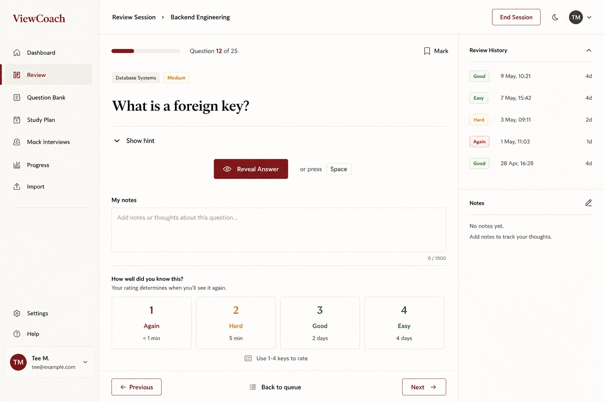
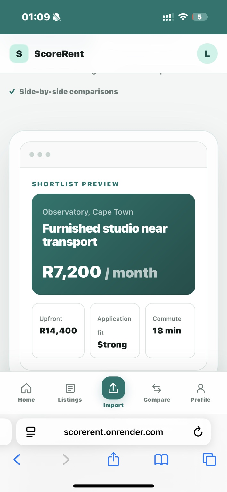

ScoreRent
Multimodal listing extraction
Gemini reads rental screenshots into structured, reviewable facts with evidence and confidence. Users confirm every value before it is saved, and the verdict itself comes from explainable rules.
Thoughtful software, grounded in real product work.
I have commercial experience contributing to established Laravel/PHP and Python/Flask codebases in an EdTech product environment, including clean-code practices, code review, automated testing and production debugging. I also build end-to-end products with strong backend and data foundations, supported by Psychology and Applied Statistics majors alongside my Computer Science degree.
Press / to jump to the contents, or use the links below.
Software Engineering Contractor · EdTech startup · Fixed-term contract · 2026. Work inside established Laravel/PHP and Python/Flask codebases, requiring careful behaviour tracing, maintainable implementation, code-review feedback, automated tests, dependency work and production debugging.
I use AI in narrow, testable workflows: structured outputs, visible evidence and a person confirming the result, rather than a chat box bolted onto a product.
The Help Assistant answers only from trusted project documentation. It retrieves evidence first, cites it, and refuses when the evidence is not enough.
NOT_SUPPORTED, or an answer with no valid citation all produce a refusal.ScoreRent
Gemini reads rental screenshots into structured, reviewable facts with evidence and confidence. Users confirm every value before it is saved, and the verdict itself comes from explainable rules.
SA Tech Job Market
A TF-IDF + logistic regression model, scored with macro-F1 for imbalanced classes, and Gemini suggest labels where explainable rules cannot decide. They write to separate fields and never overwrite the canonical data.
Commercial EdTech
spaCy NER training data, entity classification and pipeline changes, with tests, plus chatbot feature integration inside an existing Flask service.
Everyday practice
Architecture critique, test ideas, debugging hypotheses and documentation, with design decisions, code review and final verification staying with me.
Each project combines technical implementation with a clear user problem, deliberate trade-offs, testing and evidence of delivery.

Interview preparation that tells users what to practise next.
An adaptive Django platform combining structured questions, spaced review, 12 learning roadmaps, daily study planning, mock interviews, interview goals and reusable personal evidence.

Explainable rental decision support, not a black-box score.
A FastAPI application that evaluates renter and listing information using deterministic rules, then returns a verdict, confidence level, reasons and practical next steps.
Systems, data and human-centred computing. View all projects →
Open to graduate and junior software engineering roles in South Africa, including relocation.